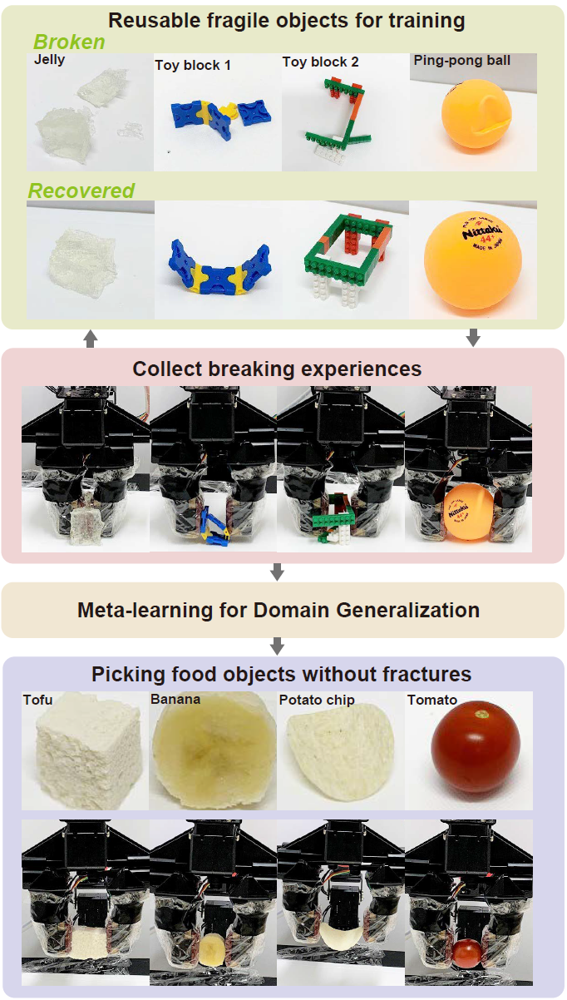

Graduate School of Science and Technology, Keio University, Japan
Advisor: Prof. Hideo Saito

Learning Food Picking without Food: Fracture Anticipation by Breaking Reusable Fragile Objects
Rinto Yagawa, Reina Ishikawa, Masashi Hamaya, Kazutoshi Tanaka, Atsushi Hashimoto, Hideo Saito
IEEE International Conference on Robotics and Automation (ICRA), 2023, pp. 917–923